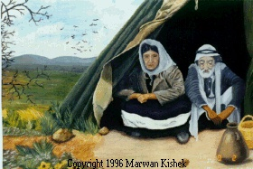
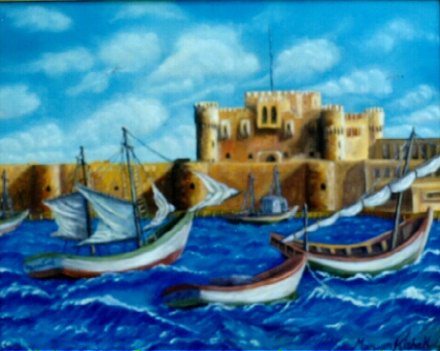
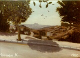
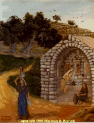

 24" x 32".
Two Refugees pondering their fate, and that of hundreds of thousands of Palestinians, after being uprooted from their home in Palestine, in 1948.
  20" x
24".
20" x
24".
Kaytabi Castle and Alexandria's Eastern Harbor, Alexandria, Egypt. This Medieval Castle was built on the exact location of the famous light house of Alexandria using stones recovered from its ruins.
 10" x 14".
The view from Al-Nuzha Street, Ramallah, Palestine.
 14" x 18".
At the Virgin's Spring, Nazareth.
The law of the jungle.
Unfortunately, it is sometimes adopted by humans.
[Back to Top] [Natural Scenery] [Holy Art] [The Artist]
This page was accessedSend mail to makishek@netcom.ca with
questions or comments about this web site.
Copyright © 1996-1997 Dr. Marwan A. Kishek. All rights reserved.
Last modified: Jan. 26, 1997